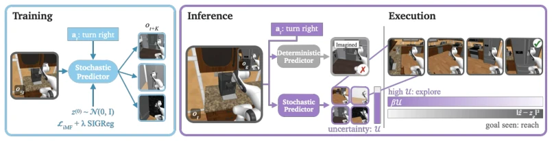
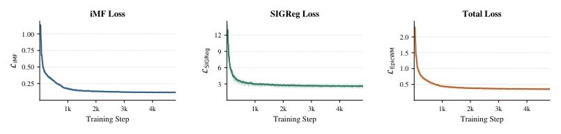
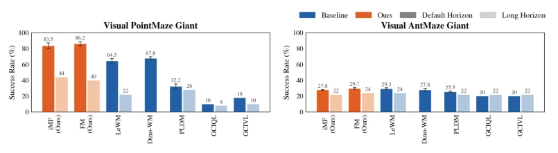
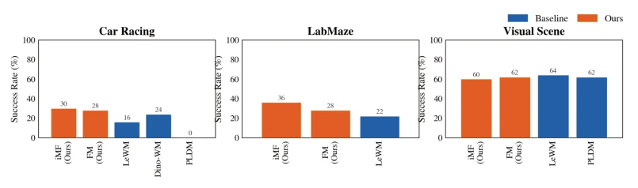
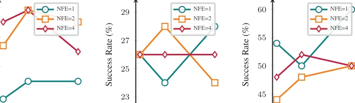
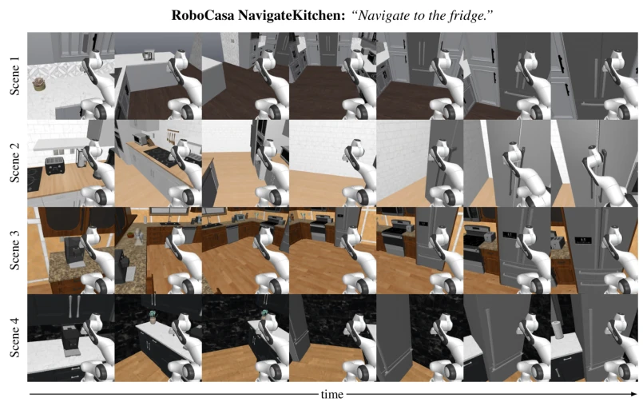

EpicWorldModel injects the "soul" of "uncertainty" into JEPA world models, attempting to solve the hallucination problem where traditional deterministic models "confidently generate nonsense" in occlusion scenarios. It replaces tedious point regression with Flow Matching, enabling the model to learn to "guess" multiple possibilities; this approach proves effective in visual-limited maze navigation, outperforming LeWorldModel by 22%. However, is this "multiple guessing" strategy computationally worthwhile? After all, it relies on multiple sampling and complex Flow inference, and for robot control with extremely high real-time requirements, the cost of this "exploration" might be too high. Additionally, the paper makes no mention of compatibility with language instructions; in real-world tasks, relying solely on image goals may be insufficient. Overall, this is a very practical improvement for specific POMDP scenarios, but it is still far from the "omniscient and omnipotent" state of general embodied intelligence, so do not expect it to solve all occlusion problems.
研究动机Motivation
现有的基于 Joint-Embedding Predictive Architecture (JEPA) 的世界模型（如 LeWorldModel [Maes et al., 2026] 和 DINO-WM [Zhou et al., 2025]）大多设计为确定性预测，即给定历史观测和动作，只输出一个最可能的未来状态。这种范式在完全可观测场景下表现优异，但在部分可观测（Partially Observable）环境中却面临严峻挑战。当关键信息（如被遮挡的目标）缺失时，确定性模型往往无法区分多种合理的未来可能性，导致“记忆化”训练数据中的特定场景，从而在推理时产生幻觉（Hallucination）。例如，机器人可能根据训练数据“脑补”出冰箱的位置，而忽略真实世界中冰箱可能位于左侧的事实。这种缺乏预测不确定性的模型在规划时无法主动探索未知区域，导致在视觉受限的导航任务中成功率大幅下降。因此，亟需一种能够显式建模未来状态分布、利用预测方差作为探索信号的新型框架，以平衡目标达成与对未知区域的探索。
Existing world models based on Joint-Embedding Predictive Architecture (JEPA) (such as LeWorldModel [Maes et al., 2026] and DINO-WM [Zhou et al., 2025]) are mostly designed for deterministic prediction, meaning given historical observations and actions, they output only one most likely future state. This paradigm performs excellently in fully observable scenarios but faces severe challenges in partially observable (Partially Observable) environments. When key information (such as occluded targets) is missing, deterministic models often fail to distinguish multiple reasonable future possibilities, leading to "memorizing" specific scenarios in training data, thus producing hallucinations (Hallucination) during inference. For example, a robot might "hallucinate" the fridge's location based on training data, ignoring the fact that the fridge might be on the left in the real world. Models lacking predictive uncertainty cannot actively explore unknown areas during planning, leading to a significant drop in success rate in visual-limited navigation tasks. Therefore, there is an urgent need for a new framework capable of explicitly modeling future state distributions, utilizing prediction variance as an exploration signal, to balance goal achievement with exploration of unknown areas.

Figure 1: A robot is asked to navigate to a fridge initially outside its field of view. A deterministic world model memorizes the location of the fridge from training data and hallucinates it at inference, even when the true location differs. A stochastic model instead maintains a distribution over plausible futures, enabling uncertainty-aware planning. Dark gray framed images indicate observation inputs; colored frames indicate predicted futures. We only show four possibilities at t and the results of a single choice at t + 1. In practice observations and live in the jointly learned representation space.
EpicWorldModel proposes a planning framework based on stochastic JEPA, the core of which is replacing traditional deterministic regression with Conditional Flow Matching (CFM). The overall process is divided into two stages: representation learning and stochastic prediction planning. First, the encoder maps observations to latent space and constrains the latent distribution to an isotropic Gaussian distribution via Sketched Isotropic Gaussian Regularizer (SIGReg), ensuring source distribution compatibility with data distribution. Second, the predictor no longer outputs a single point but learns a conditional probability distribution. Specifically, the model predicts the "average velocity" (Improved MeanFlow, iMF) from standard Gaussian noise to future latent states, trained using a flow matching objective function, enabling the generation of multiple latent future trajectories with only single or few function evaluations (1-NFE or 2-NFE) during inference. In the planning stage, the system uses Cross-Entropy Method (CEM) to search for action sequences. The key innovation lies in introducing an exploration reward based on prediction variance: by sampling multiple noise seeds to generate a set of latent future states, calculating their variance as uncertainty measure U. Theoretical proof shows U is an upper bound of prediction entropy and is positively correlated with Expected Information Gain (EIG). The planning objective function maximizes uncertainty U (i.e., exploring unknown areas) while minimizing distance to the goal state, thereby guiding the robot to actively explore in occluded or unknown areas rather than blindly relying on training data memory.

Figure 2: Loss curves of EpicWorldModel on the visual PointMaze environment. The bold colored lines represents the smoothed loss and the faint colored lines the actual per step loss. Overall we observe minimal variance and smooth convergence of the encoder and stochastic predictor.
The paper was evaluated on benchmarks including Visual PointMaze Giant, Visual AntMaze Giant, Visual Scene, Car Racing, LabMaze, and RoboCasa NavigateKitchen. Baselines include reinforcement learning methods such as GCIVL, GCIQL, and world models such as PLDM, DINO-WM, LeWorldModel. Results show EpicWorldModel performs excellently in visual-limited navigation tasks, with a success rate on Visual PointMaze Giant approximately 22% higher than LeWorldModel (reaching 86%), significantly outperforming other baselines. In RoboCasa experiments, by controlling initial distance and occlusion degree, it was found that uncertainty-guided exploration can significantly improve success rate when the goal is invisible (from 46.7% to 80%), with no negative impact when the goal is visible. Ablation experiments indicate that hyperparameters β (exploration weight) and NFE (flow evaluation count) are sensitive to performance, with typically β=0.4 and NFE=2 being the best balance point. Additionally, analysis shows prediction variance is high at the beginning of planning and shrinks as the robot approaches the goal, validating the effectiveness of uncertainty as an exploration signal.

Figure 3: Success rate comparison across benchmark environments. FM and IMF represent EpicWorldModel with the flow matching objectives introduced in Equation (5) (FM) and Equation (6) (iMF). EpicWorldModel achieves the best performance in both the default- and long-horizon settings.

Figure 5: Success rate comparison across benchmark environments. EpicWorldModel achieves competitive planning success rate across diverse navigation task under partially observable scenes and is on-par for complex manipulation in the Visual Scene.

Figure 6: Ablation study on disagreement weight across environments. (a) Visual PointMaze Giant shows clear sensitivity to hyperparameters with optimal performance at β = 0.4 and Number Flow Evolutions(NFE)=2. (b) AntMaze Giant demonstrates more stable performance across settings, with modest gains from moderate exploration. (c) Visual Scene shows NFE values (NFE=1) achieve better performance.

Figure 8: Qualitative rollouts of EpicWorldModel on RoboCasa NavigateKitchen. Each row shows an episode in a different kitchen layout from the validation scene split. The initial visibility is < 0.5 for all episodes, only displaying the hardest tasks. All episodes are conditioned on the same instruction, and frames are ordered left to right in time. At the start of each episode the fridge is outside the field of view or occluded by cabinets and counters. Guided by the uncertainty cost U, the robot first turns and moves toward unobserved regions of the kitchen, then commits to the goal once the fridge becomes visible. All shown results are from an iMF model (β = 0.1, NFE = 2).